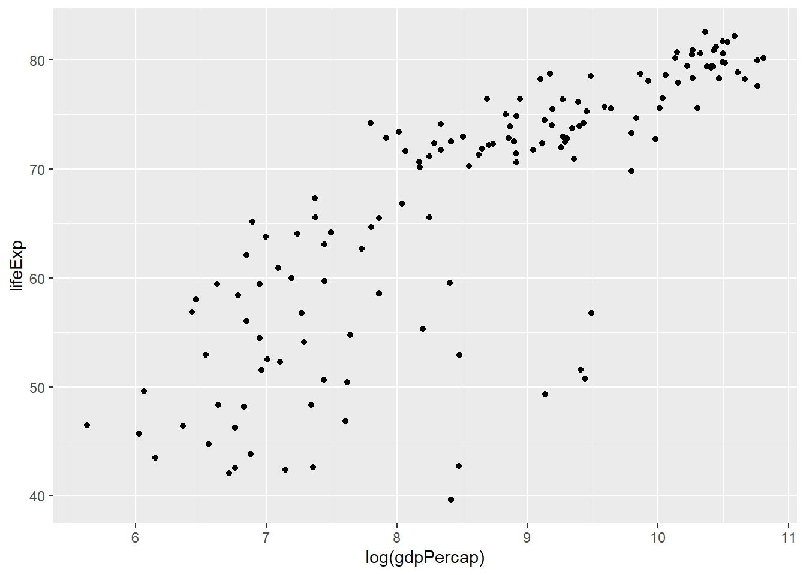
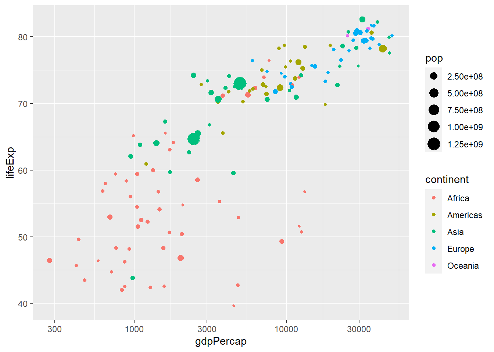
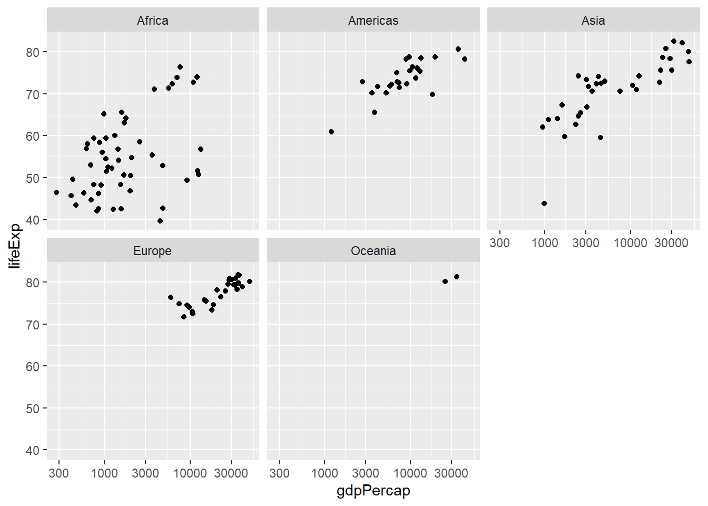
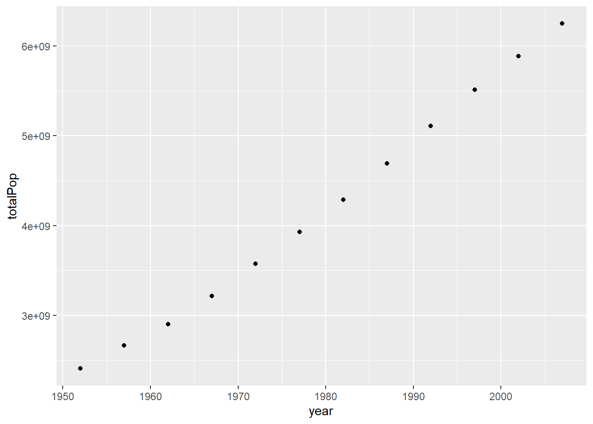
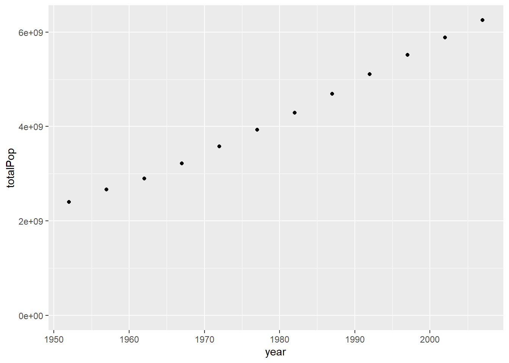
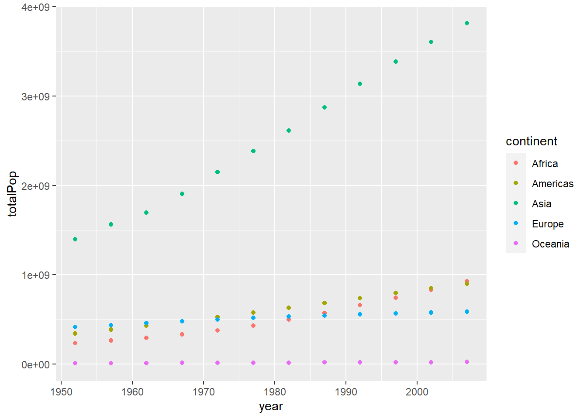
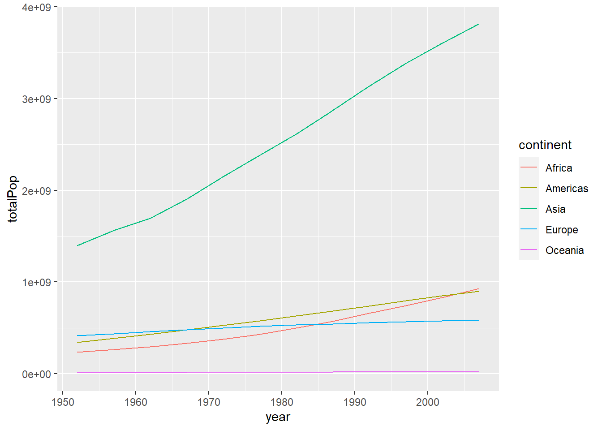
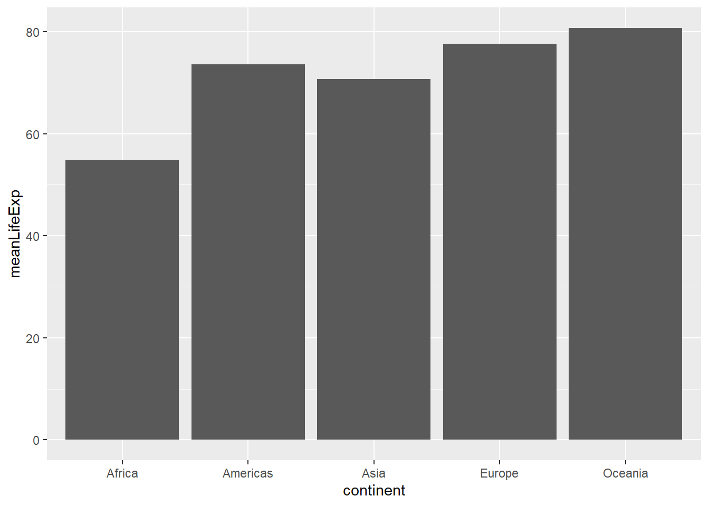
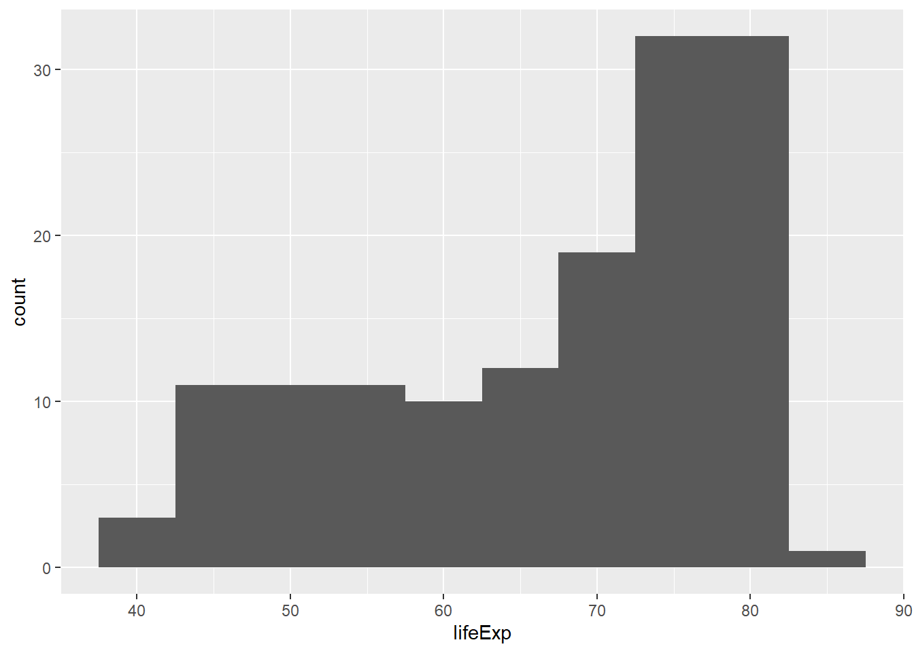
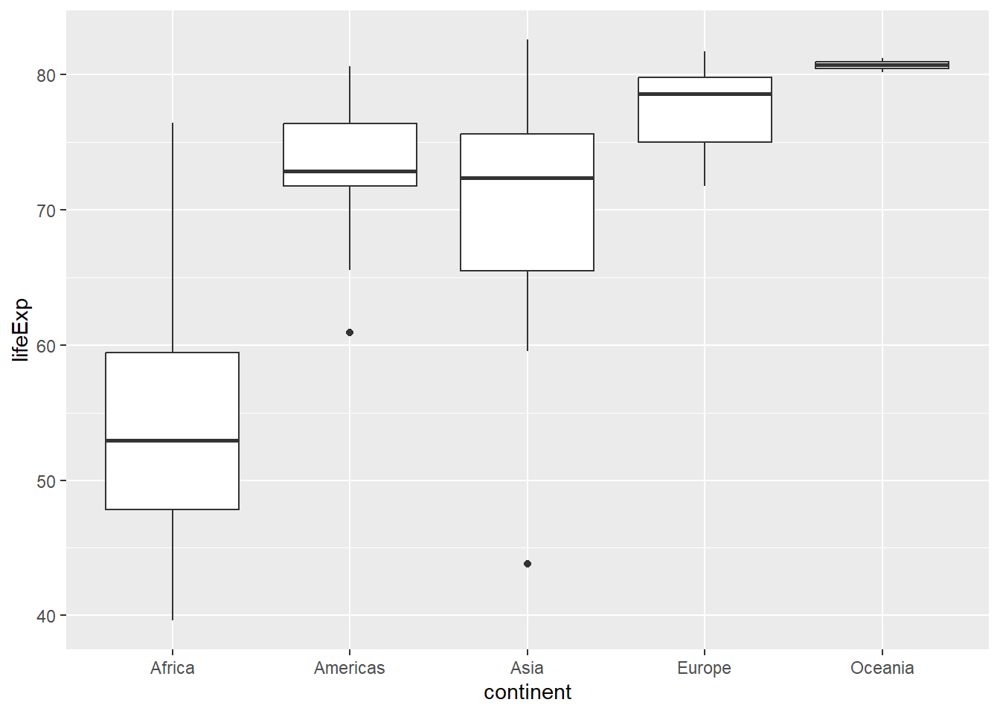

Introduction to the Tidyverse
1 Data wrangling
library(gapminder)## Warning: package 'gapminder' was built under R version 4.2.3library(dplyr)##
## Attaching package: 'dplyr'## The following objects are masked from 'package:stats':
##
## filter, lag## The following objects are masked from 'package:base':
##
## intersect, setdiff, setequal, union1.1 The filter verb
gapminder %>%
filter(year == 2007)## # A tibble: 142 × 6
## country continent year lifeExp pop gdpPercap
## <fct> <fct> <int> <dbl> <int> <dbl>
## 1 Afghanistan Asia 2007 43.8 31889923 975.
## 2 Albania Europe 2007 76.4 3600523 5937.
## 3 Algeria Africa 2007 72.3 33333216 6223.
## 4 Angola Africa 2007 42.7 12420476 4797.
## 5 Argentina Americas 2007 75.3 40301927 12779.
## 6 Australia Oceania 2007 81.2 20434176 34435.
## 7 Austria Europe 2007 79.8 8199783 36126.
## 8 Bahrain Asia 2007 75.6 708573 29796.
## 9 Bangladesh Asia 2007 64.1 150448339 1391.
## 10 Belgium Europe 2007 79.4 10392226 33693.
## # … with 132 more rowsgapminder %>%
filter(country == "Brazil")## # A tibble: 12 × 6
## country continent year lifeExp pop gdpPercap
## <fct> <fct> <int> <dbl> <int> <dbl>
## 1 Brazil Americas 1952 50.9 56602560 2109.
## 2 Brazil Americas 1957 53.3 65551171 2487.
## 3 Brazil Americas 1962 55.7 76039390 3337.
## 4 Brazil Americas 1967 57.6 88049823 3430.
## 5 Brazil Americas 1972 59.5 100840058 4986.
## 6 Brazil Americas 1977 61.5 114313951 6660.
## 7 Brazil Americas 1982 63.3 128962939 7031.
## 8 Brazil Americas 1987 65.2 142938076 7807.
## 9 Brazil Americas 1992 67.1 155975974 6950.
## 10 Brazil Americas 1997 69.4 168546719 7958.
## 11 Brazil Americas 2002 71.0 179914212 8131.
## 12 Brazil Americas 2007 72.4 190010647 9066.gapminder %>%
filter(year == 2007, country == "Brazil")## # A tibble: 1 × 6
## country continent year lifeExp pop gdpPercap
## <fct> <fct> <int> <dbl> <int> <dbl>
## 1 Brazil Americas 2007 72.4 190010647 9066.1.2 The arrange verb
gapminder %>%
arrange(gdpPercap)## # A tibble: 1,704 × 6
## country continent year lifeExp pop gdpPercap
## <fct> <fct> <int> <dbl> <int> <dbl>
## 1 Congo, Dem. Rep. Africa 2002 45.0 55379852 241.
## 2 Congo, Dem. Rep. Africa 2007 46.5 64606759 278.
## 3 Lesotho Africa 1952 42.1 748747 299.
## 4 Guinea-Bissau Africa 1952 32.5 580653 300.
## 5 Congo, Dem. Rep. Africa 1997 42.6 47798986 312.
## 6 Eritrea Africa 1952 35.9 1438760 329.
## 7 Myanmar Asia 1952 36.3 20092996 331
## 8 Lesotho Africa 1957 45.0 813338 336.
## 9 Burundi Africa 1952 39.0 2445618 339.
## 10 Eritrea Africa 1957 38.0 1542611 344.
## # … with 1,694 more rowsgapminder %>%
arrange(desc(gdpPercap))## # A tibble: 1,704 × 6
## country continent year lifeExp pop gdpPercap
## <fct> <fct> <int> <dbl> <int> <dbl>
## 1 Kuwait Asia 1957 58.0 212846 113523.
## 2 Kuwait Asia 1972 67.7 841934 109348.
## 3 Kuwait Asia 1952 55.6 160000 108382.
## 4 Kuwait Asia 1962 60.5 358266 95458.
## 5 Kuwait Asia 1967 64.6 575003 80895.
## 6 Kuwait Asia 1977 69.3 1140357 59265.
## 7 Norway Europe 2007 80.2 4627926 49357.
## 8 Kuwait Asia 2007 77.6 2505559 47307.
## 9 Singapore Asia 2007 80.0 4553009 47143.
## 10 Norway Europe 2002 79.0 4535591 44684.
## # … with 1,694 more rowsgapminder %>%
arrange(-gdpPercap)## # A tibble: 1,704 × 6
## country continent year lifeExp pop gdpPercap
## <fct> <fct> <int> <dbl> <int> <dbl>
## 1 Kuwait Asia 1957 58.0 212846 113523.
## 2 Kuwait Asia 1972 67.7 841934 109348.
## 3 Kuwait Asia 1952 55.6 160000 108382.
## 4 Kuwait Asia 1962 60.5 358266 95458.
## 5 Kuwait Asia 1967 64.6 575003 80895.
## 6 Kuwait Asia 1977 69.3 1140357 59265.
## 7 Norway Europe 2007 80.2 4627926 49357.
## 8 Kuwait Asia 2007 77.6 2505559 47307.
## 9 Singapore Asia 2007 80.0 4553009 47143.
## 10 Norway Europe 2002 79.0 4535591 44684.
## # … with 1,694 more rowsgapminder %>%
filter(year==2007) %>%
arrange(desc(gdpPercap))## # A tibble: 142 × 6
## country continent year lifeExp pop gdpPercap
## <fct> <fct> <int> <dbl> <int> <dbl>
## 1 Norway Europe 2007 80.2 4627926 49357.
## 2 Kuwait Asia 2007 77.6 2505559 47307.
## 3 Singapore Asia 2007 80.0 4553009 47143.
## 4 United States Americas 2007 78.2 301139947 42952.
## 5 Ireland Europe 2007 78.9 4109086 40676.
## 6 Hong Kong, China Asia 2007 82.2 6980412 39725.
## 7 Switzerland Europe 2007 81.7 7554661 37506.
## 8 Netherlands Europe 2007 79.8 16570613 36798.
## 9 Canada Americas 2007 80.7 33390141 36319.
## 10 Iceland Europe 2007 81.8 301931 36181.
## # … with 132 more rows1.3 The mutate verb
gapminder %>%
mutate(pop = pop/1000000)## # A tibble: 1,704 × 6
## country continent year lifeExp pop gdpPercap
## <fct> <fct> <int> <dbl> <dbl> <dbl>
## 1 Afghanistan Asia 1952 28.8 8.43 779.
## 2 Afghanistan Asia 1957 30.3 9.24 821.
## 3 Afghanistan Asia 1962 32.0 10.3 853.
## 4 Afghanistan Asia 1967 34.0 11.5 836.
## 5 Afghanistan Asia 1972 36.1 13.1 740.
## 6 Afghanistan Asia 1977 38.4 14.9 786.
## 7 Afghanistan Asia 1982 39.9 12.9 978.
## 8 Afghanistan Asia 1987 40.8 13.9 852.
## 9 Afghanistan Asia 1992 41.7 16.3 649.
## 10 Afghanistan Asia 1997 41.8 22.2 635.
## # … with 1,694 more rowsgapminder %>%
mutate(gdp = pop*gdpPercap)## # A tibble: 1,704 × 7
## country continent year lifeExp pop gdpPercap gdp
## <fct> <fct> <int> <dbl> <int> <dbl> <dbl>
## 1 Afghanistan Asia 1952 28.8 8425333 779. 6567086330.
## 2 Afghanistan Asia 1957 30.3 9240934 821. 7585448670.
## 3 Afghanistan Asia 1962 32.0 10267083 853. 8758855797.
## 4 Afghanistan Asia 1967 34.0 11537966 836. 9648014150.
## 5 Afghanistan Asia 1972 36.1 13079460 740. 9678553274.
## 6 Afghanistan Asia 1977 38.4 14880372 786. 11697659231.
## 7 Afghanistan Asia 1982 39.9 12881816 978. 12598563401.
## 8 Afghanistan Asia 1987 40.8 13867957 852. 11820990309.
## 9 Afghanistan Asia 1992 41.7 16317921 649. 10595901589.
## 10 Afghanistan Asia 1997 41.8 22227415 635. 14121995875.
## # … with 1,694 more rowsgapminder %>%
mutate(gdp = gdpPercap*pop)%>%
filter(year==2007)%>%
arrange(desc(gdp))## # A tibble: 142 × 7
## country continent year lifeExp pop gdpPercap gdp
## <fct> <fct> <int> <dbl> <int> <dbl> <dbl>
## 1 United States Americas 2007 78.2 301139947 42952. 1.29e13
## 2 China Asia 2007 73.0 1318683096 4959. 6.54e12
## 3 Japan Asia 2007 82.6 127467972 31656. 4.04e12
## 4 India Asia 2007 64.7 1110396331 2452. 2.72e12
## 5 Germany Europe 2007 79.4 82400996 32170. 2.65e12
## 6 United Kingdom Europe 2007 79.4 60776238 33203. 2.02e12
## 7 France Europe 2007 80.7 61083916 30470. 1.86e12
## 8 Brazil Americas 2007 72.4 190010647 9066. 1.72e12
## 9 Italy Europe 2007 80.5 58147733 28570. 1.66e12
## 10 Mexico Americas 2007 76.2 108700891 11978. 1.30e12
## # … with 132 more rows2 Data visualization
library(ggplot2)
gapminder_2007 <- gapminder %>%
filter(year==2007)ggplot(data = gapminder_2007, mapping = aes(x = gdpPercap, y = lifeExp)) +
geom_point()
2.1 Log scales
ggplot(data = gapminder_2007, mapping = aes(x = log(gdpPercap), y = lifeExp)) +
geom_point()
ggplot(data = gapminder_2007, mapping = aes(x = gdpPercap, y = lifeExp)) +
geom_point() +
scale_x_log10()2.2 Additional aesthetics
ggplot(gapminder_2007, aes(x=gdpPercap,y=lifeExp,color=continent,size = pop)) +
geom_point() +
scale_x_log10()
2.3 Faceting
ggplot(gapminder_2007, aes(x=gdpPercap,y=lifeExp)) +
geom_point() +
scale_x_log10()+
facet_wrap(~continent) #splitting BY continent
3 Grouping and summarizing
3.1 The summarize verb
gapminder%>%
summarise(meanLifeExp = mean(lifeExp))## # A tibble: 1 × 1
## meanLifeExp
## <dbl>
## 1 59.5gapminder%>%
filter(year==2007)%>%
summarise(meanLifeExp = mean(lifeExp), totalPop = sum(pop))## # A tibble: 1 × 2
## meanLifeExp totalPop
## <dbl> <dbl>
## 1 67.0 62510131793.2 The group_by verb
gapminder%>%
group_by(year)%>%
summarise(meanLifeExp = mean(lifeExp), totalPop = sum(pop))## # A tibble: 12 × 3
## year meanLifeExp totalPop
## <int> <dbl> <dbl>
## 1 1952 49.1 2406957150
## 2 1957 51.5 2664404580
## 3 1962 53.6 2899782974
## 4 1967 55.7 3217478384
## 5 1972 57.6 3576977158
## 6 1977 59.6 3930045807
## 7 1982 61.5 4289436840
## 8 1987 63.2 4691477418
## 9 1992 64.2 5110710260
## 10 1997 65.0 5515204472
## 11 2002 65.7 5886977579
## 12 2007 67.0 6251013179gapminder%>%
filter(year==2007)%>%
group_by(continent)%>%
summarise(meanLifeExp = mean(lifeExp), totalPop = sum(pop))## # A tibble: 5 × 3
## continent meanLifeExp totalPop
## <fct> <dbl> <dbl>
## 1 Africa 54.8 929539692
## 2 Americas 73.6 898871184
## 3 Asia 70.7 3811953827
## 4 Europe 77.6 586098529
## 5 Oceania 80.7 24549947gapminder%>%
group_by(year,continent)%>%
summarise(meanLifeExp = mean(lifeExp), totalPop = sum(pop))## `summarise()` has grouped
## output by 'year'. You can
## override using the `.groups`
## argument.## # A tibble: 60 × 4
## # Groups: year [12]
## year continent meanLifeExp totalPop
## <int> <fct> <dbl> <dbl>
## 1 1952 Africa 39.1 237640501
## 2 1952 Americas 53.3 345152446
## 3 1952 Asia 46.3 1395357351
## 4 1952 Europe 64.4 418120846
## 5 1952 Oceania 69.3 10686006
## 6 1957 Africa 41.3 264837738
## 7 1957 Americas 56.0 386953916
## 8 1957 Asia 49.3 1562780599
## 9 1957 Europe 66.7 437890351
## 10 1957 Oceania 70.3 11941976
## # … with 50 more rows3.3 Visualizing summarized data
by_year<-gapminder%>%
group_by(year)%>%
summarize(meanLifeExp = mean(lifeExp), totalPop = sum(pop))
by_year## # A tibble: 12 × 3
## year meanLifeExp totalPop
## <int> <dbl> <dbl>
## 1 1952 49.1 2406957150
## 2 1957 51.5 2664404580
## 3 1962 53.6 2899782974
## 4 1967 55.7 3217478384
## 5 1972 57.6 3576977158
## 6 1977 59.6 3930045807
## 7 1982 61.5 4289436840
## 8 1987 63.2 4691477418
## 9 1992 64.2 5110710260
## 10 1997 65.0 5515204472
## 11 2002 65.7 5886977579
## 12 2007 67.0 6251013179ggplot(by_year,aes(x=year,y=totalPop))+
geom_point()
ggplot(by_year,aes(x=year,y=totalPop))+
geom_point() +
expand_limits(y=0)
by_year_continent <- gapminder %>%
group_by(year,continent)%>%
summarize(meanLifeExp = mean(lifeExp), totalPop = sum(pop))## `summarise()` has grouped
## output by 'year'. You can
## override using the `.groups`
## argument.by_year_continent## # A tibble: 60 × 4
## # Groups: year [12]
## year continent meanLifeExp totalPop
## <int> <fct> <dbl> <dbl>
## 1 1952 Africa 39.1 237640501
## 2 1952 Americas 53.3 345152446
## 3 1952 Asia 46.3 1395357351
## 4 1952 Europe 64.4 418120846
## 5 1952 Oceania 69.3 10686006
## 6 1957 Africa 41.3 264837738
## 7 1957 Americas 56.0 386953916
## 8 1957 Asia 49.3 1562780599
## 9 1957 Europe 66.7 437890351
## 10 1957 Oceania 70.3 11941976
## # … with 50 more rowsggplot(by_year_continent,aes(x=year,y=totalPop,color=continent))+
geom_point()+
expand_limits(y=0)
4 Types of visualizations
4.1 Line plots
ggplot(by_year_continent,aes(x=year,y=totalPop,color=continent))+
geom_line()+
expand_limits(y=0)
4.2 Bar plots
Bar plots are useful for comparing values across discrete categories, such as continents.
by_continent <- gapminder %>%
filter(year==2007)%>%
group_by(continent)%>%
summarize(meanLifeExp = mean(lifeExp))
ggplot(by_continent,aes(x=continent,y=meanLifeExp))+
geom_col()
4.3 Histograms
ggplot(gapminder_2007,aes(x=lifeExp)) +
geom_histogram(binwidth = 5)
Setting binwidth equals 5 means that each of the bars in the histograms represents a width of five years.
4.4 Boxplots
ggplot(gapminder_2007,aes(x=continent,y=lifeExp))+
geom_boxplot()
This code was last compiled at 2023-04-11 16:09:06